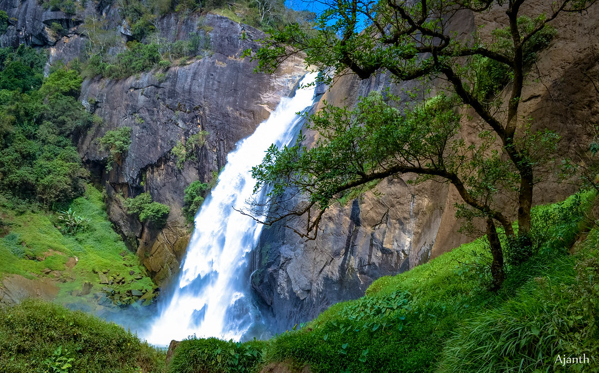

Uva Province is Sri Lanka's second least populated province, with 1,259,880 people, created in 1896. It consists of two districts:
Badulla and Moneragala. The provincial capital is Badulla. Uva is bordered by Eastern, Southern and Central provinces.
Its major tourist attractions are Dunhinda falls, Diyaluma Falls, Rawana Falls, the Yala National Park and Gal Oya National Park .
The Gal Oya hills and the Central mountains are the main uplands,
while the Mahaweli and Menik rivers and the huge Senanayake Samudraya and Maduru Oya Reservoirs are the major waterways.
1. Horton Plains National Park
Horton Plains National Park is a national park in the central highlands of Sri Lanka that was designated in 1988.
It is located at an elevation of 2,100–2,300 m (6,900–7,500 ft) and encompasses montane grassland and cloud forest.
It is rich in biodiversity and many species found here are endemic to the region. It is also a popular tourist destination and
is situated 8 kilometres (5.0 mi) from Ohiya, 6 kilometres (3.7 mi) from the world-famous Ohiya Gap/Dondra Watch and 32 kilometres
(20 mi) from Nuwara Eliya.
The Horton Plains are the headwaters of three major Sri Lankan rivers, the Mahaweli, Kelani, and Walawe.
In Sinhala the plains are known as Maha Eliya Plains (මහ එළිය තැන්න). Stone tools dating back to Balangoda culture have been found here.
The plains' vegetation is grasslands interspersed with montane forest and includes many endemic woody plants. Large herds of Sri Lankan
sambar deer feature as typical mammals and the park is also an Important Bird Area with many species not only endemic to Sri Lanka but
restricted to the Horton Plains. Forest dieback is one of the major threats to the park and some studies suggest that it is caused by a
natural phenomenon.
The sheer precipice of World's End and Baker's Falls are among the tourist attractions of the park.
Horton Plains is located on the southern plateau of the central highlands of Sri Lanka. The peaks of Kirigalpoththa
(2,389 metres (7,838 ft)) and Thotupola Kanda (2,357 metres (7,733 ft)), he second and the third highest of Sri Lanka, are situated to the west and north respectively.
2. Ella Rock
Ella is a small town in the Badulla District of Uva Province, Sri Lanka governed by an Urban Council. It is approximately 200
kilometres east of Colombo and is situated at an elevation of 1,041 metres above sea level. The area has a rich bio-diversity,
dense with numerous varieties of flora and fauna. Ella is surrounded by hills covered with cloud forests and tea plantations.
The town has a cooler climate than surrounding lowlands, due to its elevation. The Ella Gap allows views across the southern plains of Sri Lanka.
Located on the Colombo-Badulla railway line, and the A16 highway (Beragala-Hali Ela) a part of the Colombo-Badulla road.
Ella railway station is the 75th station on the Main Line and is located 271.03 km (168.41 mi) from Colombo. The station has one platform and all trains running on the Main Line stop at the station. The station opened in July 1918.
Attractions
Dhowa temple, a 2,000-year-old rock temple, is located on the Badulla-Bandarawela Road. It contains a 12 metres
(39 ft) unfinished Buddha statue carved into the surrounding rock.
Bambaragala Peak
Ella Rock, a lookout point
Little Adam's Peak, a 1,141 m (3,743 ft) pyramidal-shaped hill, located to the south-east of the town. Named after
the larger Adam's Peak.
Ravana Ella Falls, a 25 m (82 ft) waterfall, located approximately 6 km (4 mi) away from the town
3. Demodara Nine Arch Bridge
Ella is a small town in the Badulla District of Uva Province, Sri Lanka governed by an Urban Council. It is approximately 200 kilometres
east of Colombo and is situated at an elevation of 1,041 metres above sea level. The area has a rich bio-diversity, dense with numerous
varieties of flora and fauna. Ella is surrounded by hills covered with cloud forests and tea plantations. The town has a coole
r climate than surrounding lowlands, due to its elevation. The Ella Gap allows views across the southern plains of Sri Lanka.
Located on the Colombo-Badulla railway line, and the A16 highway (Beragala-Hali Ela) a part of the Colombo-Badulla road.
Ella railway station is the 75th station on the Main Line and is located 271.03 km (168.41 mi) from Colombo.
The station has one platform and all trains running on the Main Line stop at the station. The station opened in July 1918.
Commissioned under the British in the year 1921, the Nine Arch Bridge stands proudly, a testament to the engineering and architectural
brilliance of the early 20th century. Ideally placed between the Ella and Demodara railway station, those choosing to walk along the
bridge will be presented with scenes of rolling hills and dense jungle to delight in.
The Nine Arch Bridge, also known as the ‘Bridge in the Sky’ was constructed by connecting two bog mountains when constructing the Badulla –
Colombo railway.
This bridge is 300 feet in length, 25 feet in width and 80-100 feet in height. It is one of the best examples of colonial-era
railway construction in the country. The Bridge can be reached by travelling 2km on Gotuwala road starting from Halpe Textile centre
in Badulla Bandarawela road. The surrounding area has seen a steady increase in tourism due to the bridge’s architectural ingenuity and
the profuse greenery in the nearby hillsides.
Arguably the best time to venture out would be during when the locomotives come barrelling along and thus it is advisable to check on
the train schedule in advance. However, be sure to carry our trusty cam with you so that you might capture every moment that unravels before you.
4. Dunhinda Falls

Dunhinda Falls is a waterfall located about 5 kilometres from Badulla town in Sri Lanka.The Dunhinda Falls is one of Sri Lanka's most
beautiful waterfalls.The waterfall, which is 64 metres high gets its name from the smoky dew drops spray, which surrounds the area at
the foot of the waterfall. It's also known as Bridal fall as the shape of the waterfall reflect a bridal veil. Thewater fall is created by the river called Badulu Oya which goes through the Badulla town.
Dunhinda falls is one of the most beautiful waterfalls in Sri Lanka. Meaning of “Dun” in sinhala is smoke and the mist created by
this falls is like a smoke. Dunhinda waterfall is located in Uva Provinece, Sri Lanka and it is about 5 kilometres away from Badulla
town. To reach the Dunhinda waterfall, have to walk on a foot path about 1km through the forest. The “Kuda Dunhinda falls” also can be
seen from distance when going on that foot path and this journey is worth well for who loves the nature.
Dunhinda is considered to be one of the most enchanting falls in Sri Lanka and is in close proximity to Badulla town. The water rese
mbles a thin cloud as it cascades 63m downwards into a large pool. The backdrop to the fall is known as ‘Dunhinda Adaviya’. ‘Dunhinda’
translates to ‘spraying/vapour waterfall’ – the word ‘dun’ means ‘gave/was given’, while ‘hinda’ means ‘evaporate’.
This fall is steeped in history. The area was once inhabited by indigenous people – the Veddha tribe. During the time of King Rajasinhe,
a giant fern got stuck at the top of the fall, between two mountains. This acted as a dam, which resulted in the flooding of Badulla town.

 Dunhinda is considered to be one of the most enchanting falls in Sri Lanka and is in close proximity to Badulla town. The water rese
mbles a thin cloud as it cascades 63m downwards into a large pool. The backdrop to the fall is known as ‘Dunhinda Adaviya’. ‘Dunhinda’
translates to ‘spraying/vapour waterfall’ – the word ‘dun’ means ‘gave/was given’, while ‘hinda’ means ‘evaporate’.
This fall is steeped in history. The area was once inhabited by indigenous people – the Veddha tribe. During the time of King Rajasinhe,
a giant fern got stuck at the top of the fall, between two mountains. This acted as a dam, which resulted in the flooding of Badulla town.
Dunhinda is considered to be one of the most enchanting falls in Sri Lanka and is in close proximity to Badulla town. The water rese
mbles a thin cloud as it cascades 63m downwards into a large pool. The backdrop to the fall is known as ‘Dunhinda Adaviya’. ‘Dunhinda’
translates to ‘spraying/vapour waterfall’ – the word ‘dun’ means ‘gave/was given’, while ‘hinda’ means ‘evaporate’.
This fall is steeped in history. The area was once inhabited by indigenous people – the Veddha tribe. During the time of King Rajasinhe,
a giant fern got stuck at the top of the fall, between two mountains. This acted as a dam, which resulted in the flooding of Badulla town.